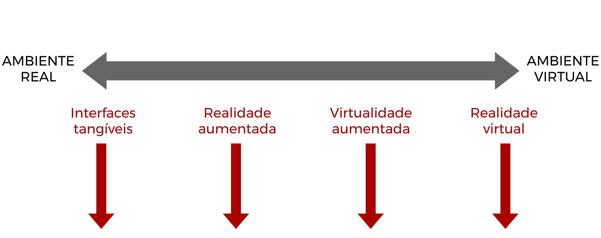

Realidade Mista
Carlos Eduardo (Cadu) Elmadjian
Andrew (Toshi) Kurauchi
José Antonio Tula Leyva
LaTIn (latin.ime.usp.br)
Frase motivacional (parte I)
"A realidade é aquela que, quando você para de acreditar nela, ela não vai embora."
Philip K. Dick

solidworks.com

bbc.com
Continuum da virtualidade
Continuum da virtualidade
Continuum da virtualidade
https://www.youtube.com/watch?v=rki-svV5gCI
Continuum da virtualidade
https://www.youtube.com/watch?v=rki-svV5gCI
https://www.youtube.com/watch?v=ihKUoZxNClA
Continuum da virtualidade
https://www.youtube.com/watch?v=rki-svV5gCI
https://www.youtube.com/watch?v=ihKUoZxNClA
https://www.youtube.com/watch?v=1ozadUAwE5Q
Continuum da virtualidade

https://www.youtube.com/watch?v=rki-svV5gCI
https://www.youtube.com/watch?v=ihKUoZxNClA
https://www.youtube.com/watch?v=1ozadUAwE5Q
https://www.youtube.com/watch?v=i4Zt3JZejbg
Continuum da virtualidade
https://www.youtube.com/watch?v=rki-svV5gCI
https://www.youtube.com/watch?v=ihKUoZxNClA
https://www.youtube.com/watch?v=1ozadUAwE5Q
https://www.youtube.com/watch?v=i4Zt3JZejbg
Recapitulando...
|
Realidade Aumentada |
Realidade Virtual |
Realidade Mista |
| Academia |
- Combina real com virtual
- Acontece em tempo real
- Registro em 3D |
- Completamente imersiva
- Ambiente sintético |
- Espectro realidade-virtualidade |
| Indústria |
- Não precisa ser em 3D
- Poucos elementos virtuais |
- Não necessariamente sintética |
- Registro em 3D
- Elementos virtuais arbitrários |
Mas fica pior:
http://wearcam.org/presence_connect/
Voltando ao passado
L. Frank Baum imaginou como seria um óculos de realidade aumentada no livro A Chave Mestra
Sensorama, de Morton Heilig, era um dispositivo para "todos os sentidos", inclusive olfato.
Em 1968, Ivan Sutherland criou a Espada de Dâmocles, o primeiro HMD funcional de que se tem notícia.
Chamado de "realidade artificial" por Myron Krueger, o Videoplace permitia interação dos usuários.
O projeto VIEW da NASA é considerado hoje o grande precursor da tecnologia de realidade virtual.
O fracasso do Nintendo Virtual Boy em meados dos anos 1990 afastou toda a indústria de entretenimento dos ambientes virtuais.
Legal, legal, mas...
como funciona?
Frase motivacional (parte II)
"Qualquer tecnologia suficientemente avançada é indistinguível de magia."
Arthur C. Clarke

vr-lens-lab.com

vrheads.com

vr-lens-lab.com

vr-lens-lab.com

ozzmaker.com

nvidia.com

doc-ok.org

discovery.wisc.edu
Ah, mas tem um porém...
Em relação à realidade aumentada...

psfk.com

edtechreview.in

digitalurban.org

digitaltrends.com

augmentedrealitytrends.com

augmentedrealitytrends.com

thesocialmediamonthly.com

artishock.com

readwrite.com
Mas não é a mesma coisa
- Pouco controle do ambiente
- Acurácia é muito importante
- Sem consenso tecnológico
solidworks.com

cinoptics.com

epson.co.uk

ubergizmo.com

appdevelopermagazine.com

zugara.com

outerchart.com
Como se fazia o rastreamento no começo...
Rastreamento de características naturais: maior robustez (e processamento)
SLAM: mapeamento tridimensional do mundo em tempo real
https://www.youtube.com/watch?v=CE1B7tdGCw0
https://www.youtube.com/watch?v=iHN4c7FYXYs
https://www.youtube.com/watch?v=ihKUoZxNClA
https://www.youtube.com/watch?v=lP5ZZI05A3g
Problemas pós-BCC

potentash.com

cgsd.com

thingpic.com

askideas.com
Alguns conselhos
1.cuidado com o hype

dailymail.co.uk

pinterest.com

nbcnews.com
2.cuidado com o hype do hype

anglenubiangoatsociety.com

brainz.org

theloop.ca
Alguns conselhos
- Aprenda bem os conceitos (os professores vivem dizendo isso e é verdade!)
- Leia os surveys, não o {Gizmodo,TecMundo,Meiobit...}
- Não fique só na leitura: implemente
Disciplinas importantes
- Vetores e Geometria (MAT0112)
- Álgebra Linear (MAT0122)
- Computação Gráfica (MAC0420)
- Visão Computacional (MAC0417)
- Interação Humano-Computador (MAC0446)
Sim, a sua trilha é Ciência de dados :-)